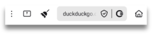
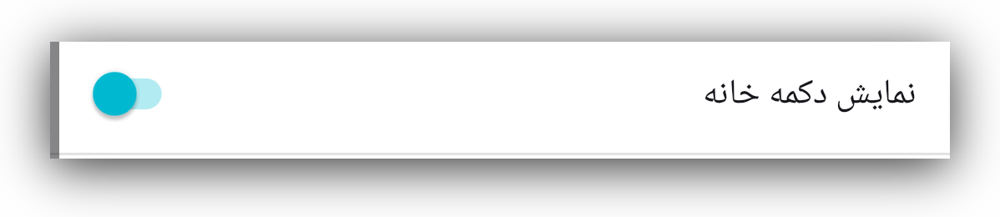
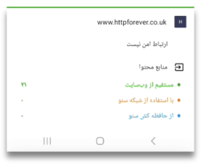
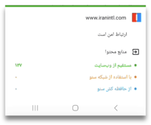
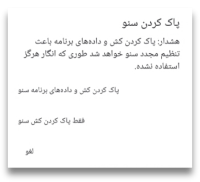
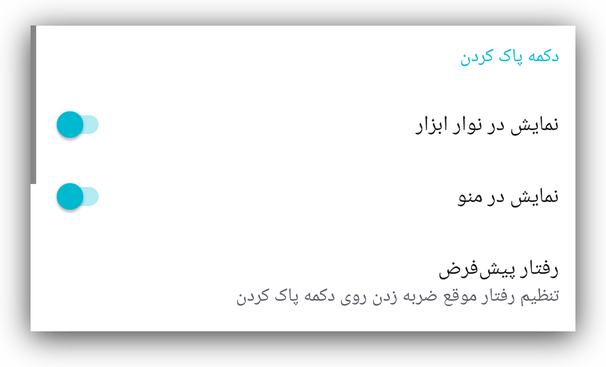
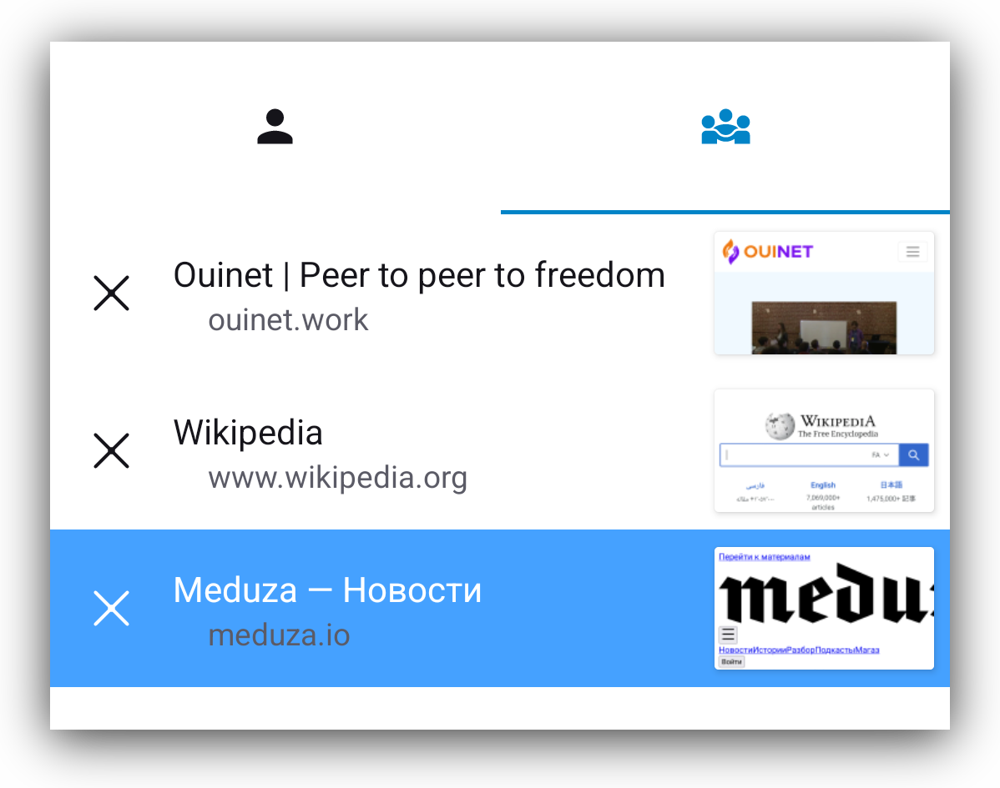
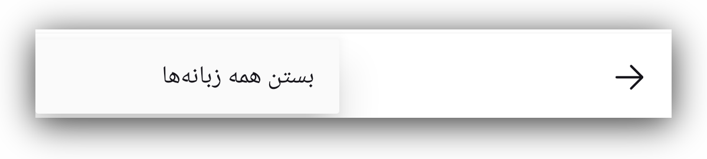
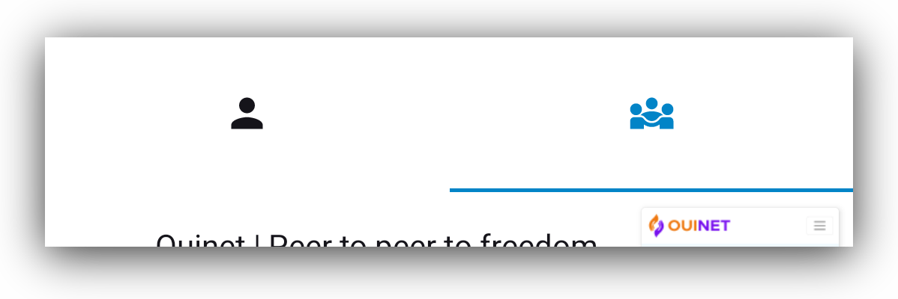

ویژگیها
نوار ابزار
در پایین صفحه، نواری شامل دکمههای گوناگون میبینید. بعضی از این دکمهها به خودی خود گویا هستند، اما برخی دیگر کمتر. بیایید نگاهی سریع به هر یک از آنها بیندازیم:
دکمه خانه
اولین دکمه، دکمه آشنای «خانه» است.
میتوانید این دکمه را طوری تغییر دهید که نمایش داده شود یا پنهان بماند؛ کافی است به تنظیمات > سفارشیسازی > نمایش دکمه خانه بروید
دکمه سنو
بعد از آن، دکمه سنو قرار دارد. با زدن روی این دکمه صفحهای برای اطلاعرسانی باز میشود که نشان میدهد اجزای وبسایت از کجا بازیابی شدهاند. این صفحه را در بخشهای مربوط به مرور شخصی و عمومی با جزئیات بیشتری توضیح میدهیم.
دکمه اتصال امن
وقتی نشانی وبسایت مورد نظرتان را وارد کنید، دکمه اتصال امن را خواهید دید که
با یک قفل کوچک یا یک سپر کوچک نشان داده میشود و بیانگر این است که اتصال شما به
آن وبسایت امن است.
اگر روی قفل یا سپر یک خط کشیده شده باشد، یعنی اتصال به آن وبسایت امن نیست.
مشابه این در مرورگرهای دیگر هم وجود دارد.

توجه: حتا با این که اتصال به این وبسایت امن نیست، آیکون سنو یک نقطه سبز کوچک دارد. این نقطه نشاندهنده امن بودن اتصال نیست، بلکه بیانگر این است که داده مستقیما از وبسایت مبدا بازیابی شده است.
اگر روی آن بزنید، جزئیات این اتصال را خواهید دید. برای درک بهتر، اسکرینشاتهایی از اتصال امن در مقایسه با اتصال ناامن قرار دادهایم.

دکمه پاک کردن
اولین دکمه در سمت راست نوار آدرس، دکمه «پاک کردن» است که به شکل یک جاروی کوچک نمایش داده شده.
با زدن روی آن، کاربر میتواند انتخاب کند که همه دادههای سنو را پاک کند طوری که انگار هرگز از سنو استفاده نشده، یا فقط آنچه را که سنو در حافظه پنهان ذخیره کرده حذف کند. گزینه نخست همه ترجیحات، سایتهای برتر (بوکمارکها)، تنظیمات و سفارشیسازیها را پاک میکند، در حالی که گزینه دوم فقط وبسایتهایی را پاک خواهد کرد که برنامه سنو در حافظه پنهان دستگاه شما ذخیره کرده است.
اگر به تنظیمات > سفارشیسازی > دکمه پاک کردن بروید، میتوانید انتخاب کنید که دکمه پاک کردن در نوار ابزار نمایش داده شود یا در منو.
با زدن روی گزینه رفتار پیشفرض، یک جعبه گفتوگو باز میشود تا انتخاب کنید که هنگام فشردن دکمه «پاک کردن» چه کاری انجام شود. این کار میتواند یادآوری گزینهها باشد (مانند تصویر بالا)، یا بلافاصله تمام محتوای ذخیرهشده در حافظه پنهان، یا حتی همه دادههای سنو را حذف کند.

دکمه زبانهها
بعدی یک مستطیل کوچک با یک عدد داخل آن است. این عدد نشان میدهد کاربر، چند زبانه باز کرده است.
با زدن روی آن، صفحهای باز میشود که در آن میتوانید همه زبانههای باز خود را ببینید.
میتوانید آنها را یکییکی ببندید، و اگر روی منوی عمودی در پایینِ سمت راست بزنید گزینهای برای بستن همه آنها بهطور همزمان خواهید داشت.
وقتی صفحه زبانهها را مشاهده میکنید، در بالای آن صفحه آیکونهای مرور عمومی و شخصی را خواهید دید و میتوانید بهراحتی بین آنها جابهجا شوید.
نمای زمانی که آیکون مرور عمومی انتخاب شده است
نمای زمانی که مرور شخصی انتخاب شده است.

منوی عمودی
آنچه منوی سهنقطهای عمودی در انتهای سمت راست نوار ابزار نمایش میدهد، به زمینه بستگی دارد.
- وقتی صفحهای از وبسایت باز باشد، این منو گزینههای مربوط به همان صفحه را نمایش میدهد.
بیشتر گزینههای این منو خودشان گویا هستند. اما اگر با uBlock Origin آشنایی ندارید، این ابزار یک مسدودکننده تبلیغات و ردیابها است.
دلیل این که ما آن را همراه با مرورگر سنو ارائه میکنیم، بیشتر برای جلوگیری از ذخیرهسازی غیرضروری تبلیغات و همچنین جلوگیری از ذخیره شدن احتمالی شناسههای منحصربهفردی است که به ردیابها مربوط میشوند.
برای آشنایی بیشتر با این مسدودکننده تبلیغات و ردیابها لطفا به صفحه وب آنها مراجعه کنید.
- اگر هنگام حضور در صفحه اصلی سنو روی این منو بزنید، میتوانید گزینهای را ببینید که امکان پاکسازی سنو را فراهم میکند (عملکرد آن همانند آیکون جارو در صفحه اصلی است).
- وقتی در صفحه زبانهها هستید، زدن این منو تنها گزینه «بستن همه زبانهها» را در اختیارتان قرار میدهد